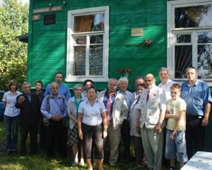
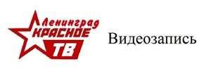
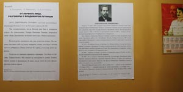

|  |  |  |
27 августа 2011 года в Доме-музее Ульяновых-Елизаровых в поселке Ульяновка (ж/д станция Саблино) под Петербургом состоялось торжественное мероприятие, посвященное 20-летию Российской общественно-политической газеты «Народная правда».
Газета была создана в результате активной деятельности выступавших против преступной горбачевской перестройки организаций — Объединенного фронта трудящихся, Движения коммунистической инициативы и учрежденной под их влиянием Компартии РСФСР. Основателем газеты, редактором-организатором и затем главным редактором с 1991 по 1998 год стал Виктор Георгиевич Долгов, член ЦК КП РСФСР от Движения коммунистической инициативы, доктор экономических наук, профессор Санкт-Петербургского государственного университета. Изначально газета выходила как восьмиполосный двуцветный еженедельник тиражом 200 тысяч экземпляров.
После контрреволюции 1991 года газета, вначале учрежденная как издание ЦК КП РСФСР и Ленинградского обкома КПСС, была переучреждена и зарегистрирована как газета трудового коллектива. Она зарекомендовала себя как боевой орган коммунистов, патриотов России. Не случайно она требовала Собчака за его преступные деяния повесить без права захоронения, а Ельцина за измену Родине приговорить к высшей мере наказания.
В то же время в деятельности газеты «Народная правда» всегда присутствовало и являлось основным позитивное начало. Она опубликовала проект Конституции России, в котором предусматривались выборы и отзыв депутатов по коллективам фабрик и заводов, Программу будущего Советского правительства.
Газета особо сблизилась с профсоюзами во время кампании по продвижению в Государственной Думе профсоюзного проекта Трудового кодекса России, подготовленного Фондом Рабочей Академии. Она регулярно публикует материалы Федерации профсоюзов России и входящих в нее профсоюзных организаций, поддерживает забастовочную борьбу работников, информирует о семинарах по рабочему движению Фонда Рабочей Академии и Федерации профсоюзов России, является одной из организаторов ежегодных международных научно-практических конференций «В.И.Ленин в современном мире», выступает за сохранение историко-культурного наследия и возрождение и развитие отечественного производства, за доведение зарплаты работников до стоимости их рабочей силы.
Газета издается и распространяется благодаря инициативе и поддержке широкого круга профсоюзных организаций, поддерживающих Программу профсоюзов «Задачи коллективных действий», общественных распространителей и читателей. «Народная правда» аккредитована в Государственной Думе России, Законодательном Собрании и Администрации Санкт-Петербурга.
Фото О.Ю.Озеровой
|
|
|